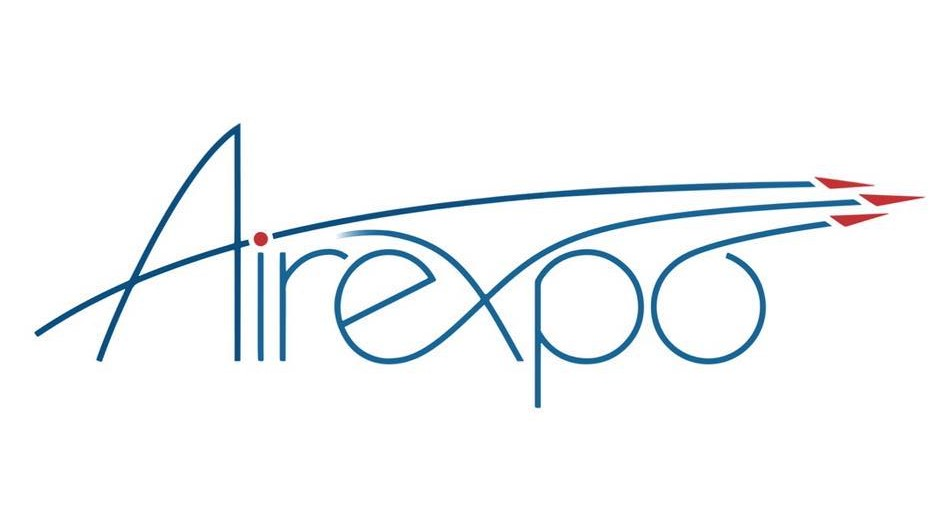
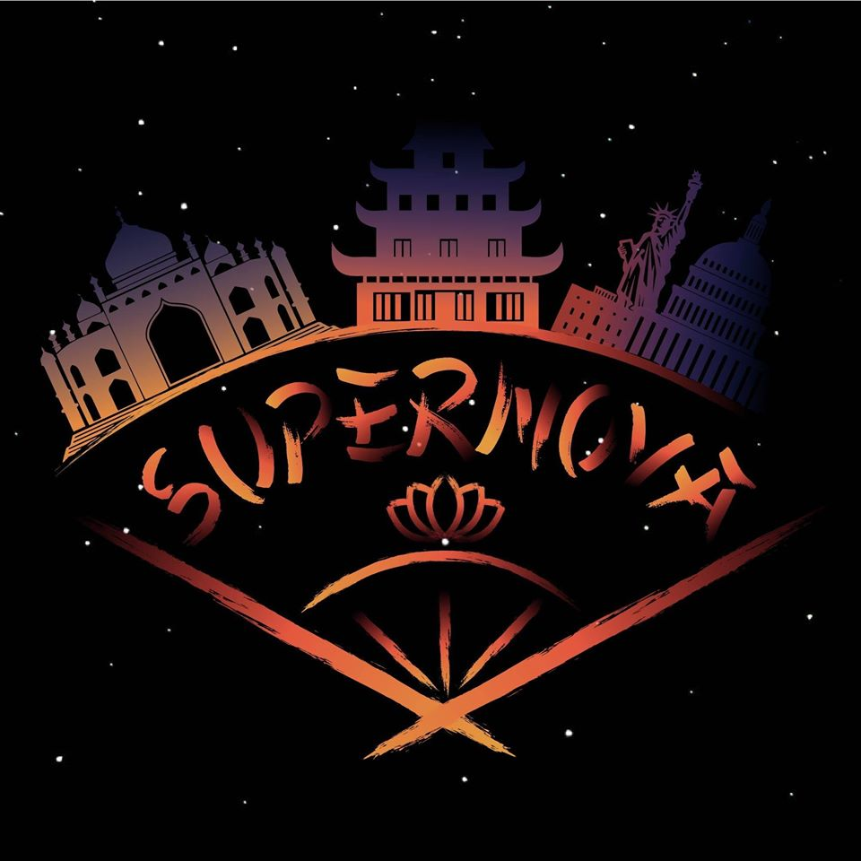
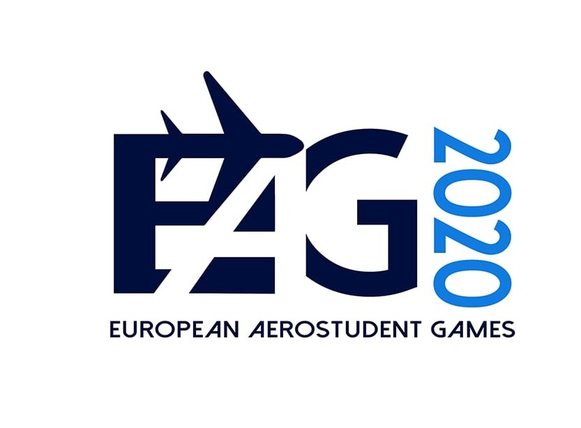
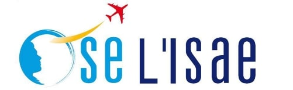
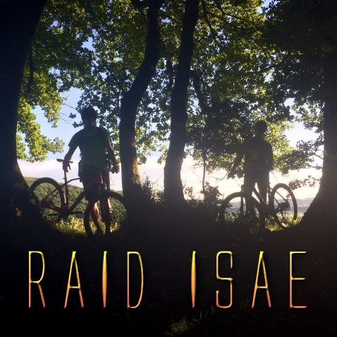
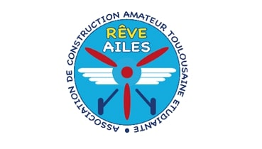
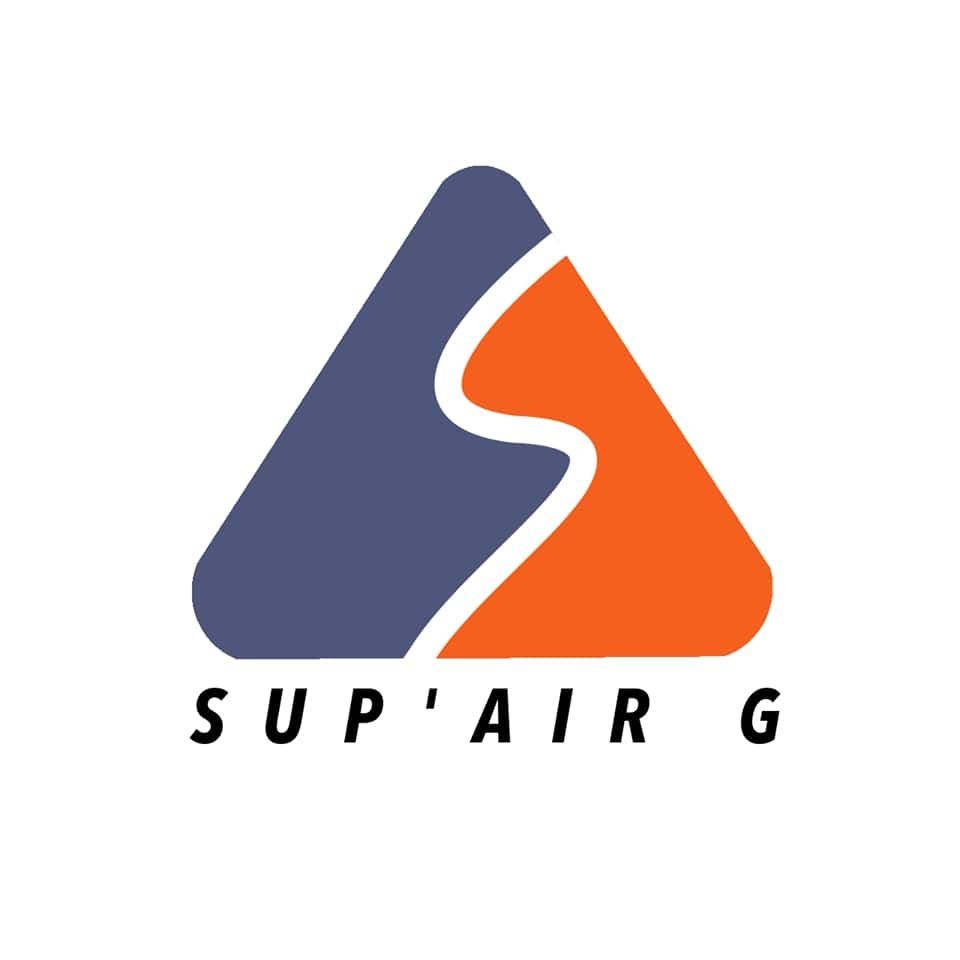
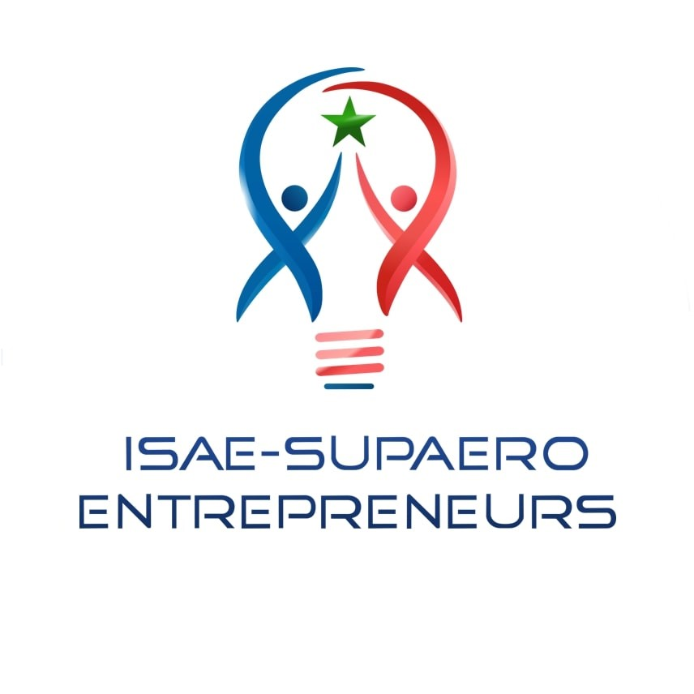
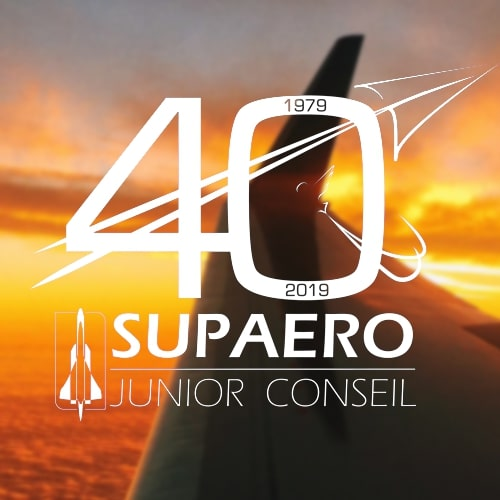
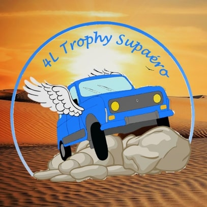

Les clubs indépendants
Sans eux, Supaero serait bien plus triste...
Certains clubs sont indépendants et forment des associations à part entière, avec leur budget et leurs gérants.
Il s'agit notamment d'associations organisant les gros évènements de la vie supaerienne (Gala, intégration...) mais aussi
contribuant à leur manière à son amélioration (SUPAERO Junior Conseil, Supaero Entrepreneurs...).

Airexpo
Airexpo est une organisation qui organise un des plus grands meetings aériens de France.Fort de 29 années d'expérience, Airexpo est maintenant LE show aéronautique des Toulousains et attire tant amateurs que férus d'aviation.
Le meeting possède la force et l’originalité d’être organisé à 100% par des étudiants, auquel ceux-ci apportent une vision jeune et passionnée de l’aéronautique. Ces jeunes proviennent des deux grandes écoles aéronautiques de Toulouse : l’ENAC et l’ISAE-Supaéro.

Gala Supernovae
Chaque année, un gala de prestige est organisé à l’occasion de la remise des diplômes des 4A. Notre mission ? Faire en sorte que cette soirée soit inoubliable !L’organisation du Gala, c’est une expérience incroyable, qui soude une équipe et fait naître un super événement. C’est l’occasion de s’investir dans la vie associative de l’école autour d’un projet à TRÈS GROS BUDGET, mais aussi d’être en contact avec toutes les promotions de Supaero (y compris les trèèès anciennes), les futurs diplômés, l’administration et de très nombreux partenaires !
Au final, c’est l’aboutissement de 8 mois de travail et source d’une très grande fierté !
Nous sommes une vingtaine dans l’équipe. Les tâches sont dispersées dans des pôles comme le pôle animation ou bien le pôle sécurité . Comme chaque année, nous devrons gérer de nombreux volontaires qui nous aideront aux vestiaires , au guichet ou encore derrière le bar.
On se débrouille également pour obtenir le soutien de sponsors que l'on salue : la fondation ISAE-SUPAERO, la région Occitane, Air France, KLM, la Société Générale, NRJ...
Tu l’auras compris, organiser un gala, c’est pas une mince affaire. Mais c’est l’association qui va te faire bâtir un vrai projet avec une répercussion sur tout l’institut. Profites-en !

European Aerostudent games
Les European Aerostudent Games sont un tournoi sportif rassemblant chaque année des étudiants des écoles (ou universités) du réseau PEGASUS, un groupe d'écoles européennes d'aéronautique et leurs partenaires. L'EAG a généralement lieu à Toulouse, en France (sur les campus ENAC & SUPAERO).Football, Volleyball, Tennis, Course à pied ... et même DodgeBall! 18 sports vous sont proposés cette année.
Avec toutes les nouvelles activités et soirées ...
-- English Version --
The European Aerostudent Games are a sports tournament gathering each year students of school (or universities) belonging to the PEGASUS network, a group of European aeronautics schools, and their partners. The EAG usually take place in Toulouse, France (at ENAC & SUPAERO campuses).Football, Volleyball, Tennis, Running... and even DodgeBall ! 18 sports are offered to you this year.
Along with all new activities and night parties...

OSE ISAE
OSE, c’est le programme d’ouverture sociale de Supaéro. Si tu as envie de transmettre, d’accompagner des collégiens ou lycéens et de les aider à réussir, tu es au bon endroit!Que tu veuilles monter un projet pour faire découvrir l’astronomie à des lycéens ou initier des collégiens à la plongée, faire fabriquer un ballon sonde par des élèves et analyser les résultats avec eux ou les initier à la robotique (tout est possible!), OSE t’accompagnes.
Mais OSE ce n’est pas que ces projets! C’est aussi du tutorat dans des lycées toulousains, des visites du campus et une journée OSE, le tout organisé par les étudiants pour faire découvrir SUPAERO, l’aéronautique et le spatial aux élèves.
Bref, il y en a pour tous les goûts! Rejoins-nous pour faire partie de cette belle aventure 🙂
En chiffres :
- 22 Établissements scolaires de l’Académie de Toulouse
- 500 Collégiens & lycéens bénéficiaires
- 130 Étudiants de l'ISAE-SUPAERO engagés
- 50 Personnels de l'ISAE-SUPAERO en soutien
- 20 Projets soutenus par le programme

Raid ISAE
Issue il y a 12 ans d'une collaboration entre élèves militaires de l'institut et un régiment du train parachutiste, l'épreuve a su gagner en maturité pour se renouveler chaque année en incontournable de la discipline.Sur un weekend, près de 250 participants découvrent un parcours dans un cadre environnemental exceptionnel.
En équipes de deux, amateurs ou confirmés, étudiants ou professionnels, civils ou militaires, les concurrents venant de toute la France s'affrontent sur des parcours de VTT, trail, course d’orientation, run & bike, tir à l'arc et/ou canoë. Les plus aguerris peuvent se mesurer sur le parcours commando, long de 150 km, nécessitant une très bonne condition physique mais aussi une lucidité sans faille. Le parcours aventure, plus court de 50 km, est le lieu d’expression des sportifs en herbe et des sprinters visant le podium.
Que ce soit au camping, lors des repas, ou encore aux ravitaillements, les participants se retrouvent et partagent des moments d'échange et de convivialité.

Rêv'Ailes
L'association indépendante Rêv'Ailes est composée d'une vingtaine d'étudiants de l'ISAE-SUPAERO dont le but est de construire un avion léger, muni d'un dispositif permettant aux personnes paraplégiques de voler de façon autonôme.Ses membres se réunissent chaque semaine afin de continuer la construction du kit reçu sous forme de tôles (l'ULM Zenair CH601-UL), en réalisant les perçages, les assemblages. C'est aussi l'occasion d'apprendre et de former les futurs constructeurs car aucune connaissance n'est requise.
Enfin, l'adaptation aux personnes paraplégiques est soigneusement pensée et améliorée au fur et à mesure, ce qui permet de développer son esprit de conception, notamment en pensant la réalisation de malonniers au lieu de palonniers.
Budget du projet : 50 k€
Membres : 25
Sponsors : LCL, ISAE, RSA, ULM technologie, ZENAIR, aérodrome de Revel

Sup'Air G
Sup'Air G est nouveau à l'ISAE-Supaero !Il s'agit d'un évènement sportif qui, comme son nom l'indique, se déroule en hiver sur les pistes.
Épreuves sérieuses (Super G, Slalom...) ou ludiques (luge...) vous y attendent pour la première édition l'année prochaine en Andorre !
Ne manquez pas cet évènement qui deviendra bientôt incontournable dans toutes les écoles ingénieurs de France !

Supaero Entrepreneurs
ISAE-Supaero Entrepreneurs est née en 2013 du projet de 4 étudiants de l'ISAE-Supaero de monter un accélérateur de startups dans l'école.L'association s'est depuis constituée un réseau important parmi les acteurs de l'entrepreneuriat toulousain et au-delà. Elle utilise ce réseau pour mener à bien ses deux missions :
- Etre le point focal de l'entrepreneuriat à l'ISAE-Supaero : organiser des événements (Startup weekend) et des conférences pour promouvoir l'innovation et l'entrepreneuriat dans l'école.
- Accompagner le développement de projets étudiants innovants par un suivi régulier de l’avancé. L'association accompagne aujourd'hui de nombreux projets dans l'école et fait le lien avec les supaeriens entrepreneurs diplômés qui ont aujourd'hui créés leurs entreprise.

Supaero Junior Conseil
SUPAERO Junior Conseil est une association appartenant au mouvement national des Junior-Entreprises.Nous offrons aux étudiants de l’ISAE-SUPAERO la possibilité de mettre leurs enseignements en application au travers d’études réalisées pour des entreprises, souvent grands groupes de l’aérospatial : Dassault Systèmes, le CNES, SAFRAN et bien d’autres.
Pour décrocher et encadrer ces projets, les membres de SJC se répartissent dans différents pôles : développement commercial, suivi d’étude, trésorerie, qualité, communication et événementiel.
L’expérience Junior-Entreprise est une opportunité unique pour ses membres de se professionnaliser dans des domaines variés et de s’épanouir au contact d’un mouvement d’ampleur nationale.
Que tu souhaites être au contact des grands acteurs de l’aérospatial, devenir chef de projet, faire de la prospection, apprendre la trésorerie, la comptabilité ou tout connaître des stratégies et outils de communication, une place t’attend à SUPAERO Junior Conseil!
- + 30 membres actifs
- 12 études sur le mandat 17/18
- +50k€ de chiffre d'affaires
- Plus-value technique et pédagogique
- Membre mouvement CNJE depuis 1979
- Évènements R'JET hebdomadaires
- Conférences et évènements mensuels
- 2 congrès régionaux par an
- 2 congrès nationaux par an
- Association soutenue par SII et la SOciété Générale
- Récemment élue dans les 30 meilleures JE françaises (2020)

4L Trophy
Tous les ans, l'asso envoie plusieurs équipes réaliser le très connu 4L Trophy dans le désert marocain !Au programme dans le courant de l'année : trouver des sponsors et se préparer à ce grand départ.
Cette année, nous avons récolté des fournitures scolaires pour les donner aux enfants dans les écoles les plus reculées du Maroc.
Alors si la mécanique te branche et que tu as envie de vivre une expérience formidable, n'hésite plus et lance-toi dans l'aventure !